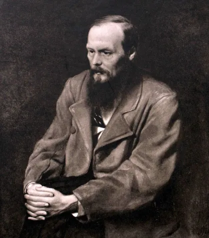
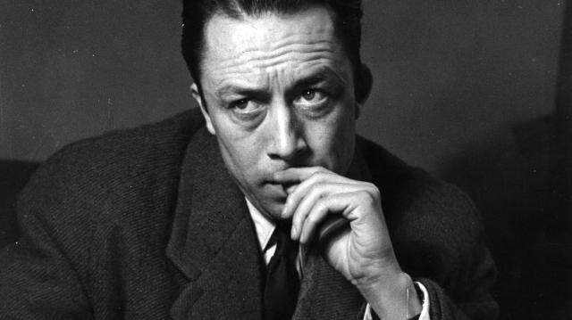
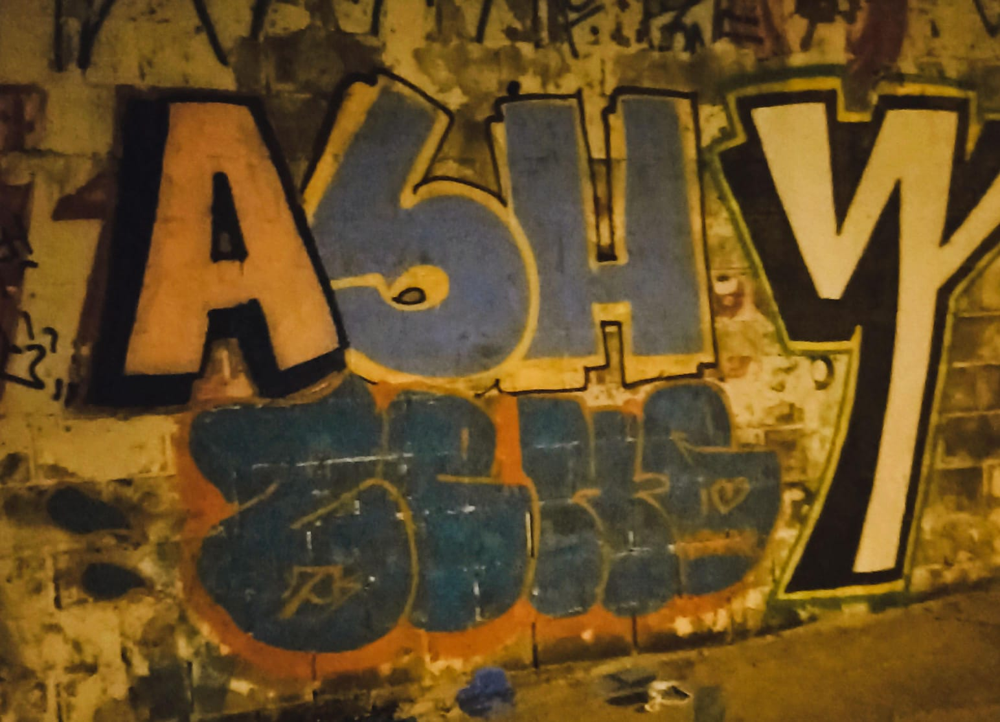
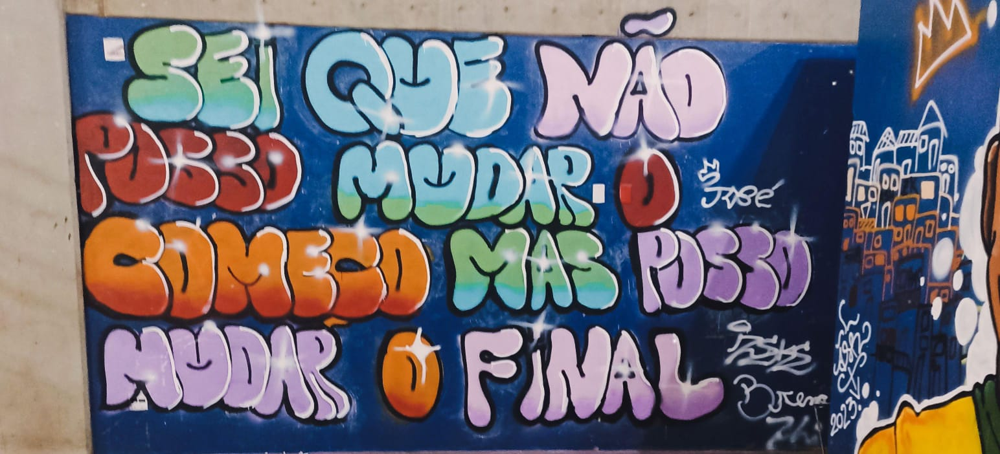
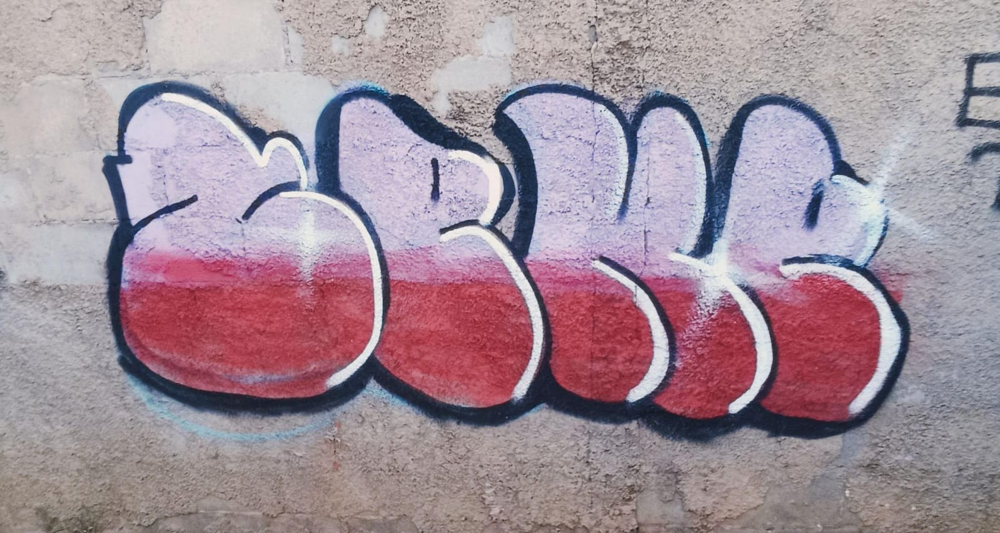
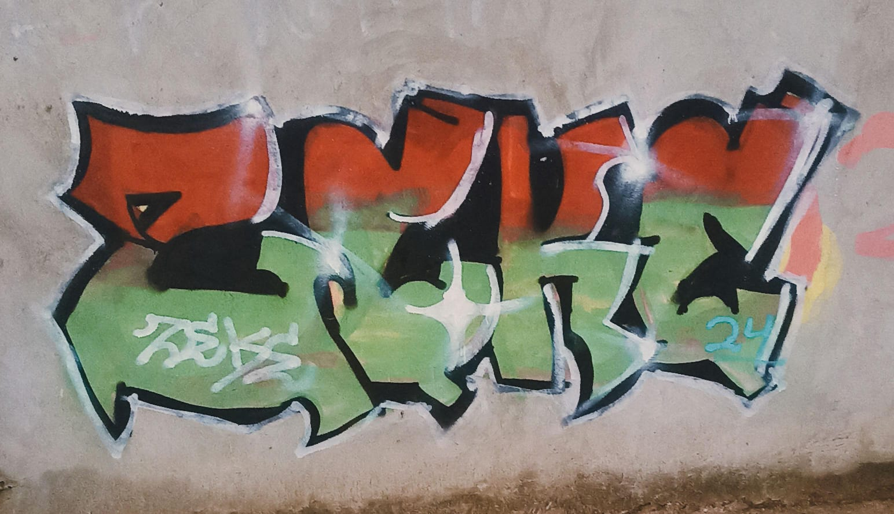

Minha vida além do código
Além da minha paixão pela programação, também gosto de ler livros, ouvir música e viajar. Essas atividades me ajudam a encontrar inspiração e equilíbrio na minha vida pessoal e profissional.
Meus autores favoritos são Dostoiévski e Albert Camus.


Na música, sou fã de rock clássico e trap, gosto de ouvir Black Sabbath, até Racionais, me considero alguém eclético.
Arte
Além da programação e da música, também tenho um grande interesse em arte. Gosto de pintura e fotografia, e acredito que a arte é uma forma poderosa de expressão e comunicação.
faço graffiti desde 2023, onde um querido amigo meu me introduziu a essa arte. Acredito que a arte é uma forma de expressão que me permite explorar minha criatividade e minha identidade. E também acredito que um desenvolvedor é um artista.




Meus objetivos futuros
Meu objetivo é me tornar um desenvolvedor front-end de destaque, contribuindo para projetos inovadores e impactantes. Estou comprometido em continuar aprendendo e aprimorando minhas habilidades para alcançar esse objetivo.
Minha filosofia de vida
Acredito que a vida é uma jornada de aprendizado e crescimento constante. Estou sempre aberto a novas experiências e desafios, e acredito que a chave para o sucesso é a perseverança e a paixão pelo que fazemos.
Minha jornada profissional
Atualmente, estou em busca de oportunidades para aplicar minhas habilidades em desenvolvimento front-end e continuar crescendo como profissional. Estou aberto a desafios e ansioso para contribuir com projetos inovadores.
Se você quiser saber mais sobre mim ou discutir oportunidades de colaboração, sinta-se à vontade para entrar em contato comigo através das minhas redes sociais ou do meu portfólio online.